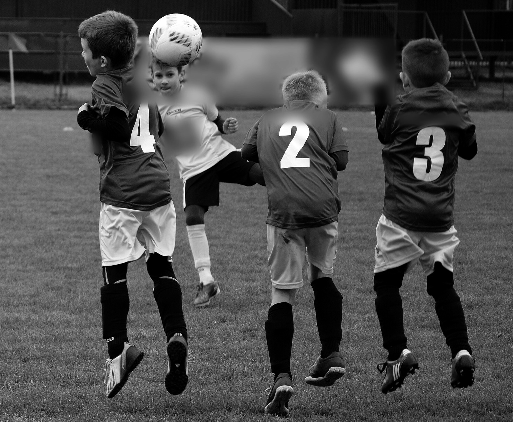

4
PORTERÍAS
HORST WEIN
ENTRENADOR
H. WEIN
ESPAÑA · HOCKEY · MOSCÚ 1980
BARCELONA
Foto: Alvaro Andres Ardila Villamizar · CC BY-SA 4.0
!
?
?
?
«the game has been the teacher and not the coach»
HORST WEIN, 2013
2024

FOTO ILUSTRATIVA · SANOK (POLONIA), 2016
FICHA · RECREACIÓN
DFB · ALEMANIA
SUB-6 Y SUB-7 · 2024/25
OBLIGATORIO
Foto: Silar, 2016 · CC BY-SA 4.0